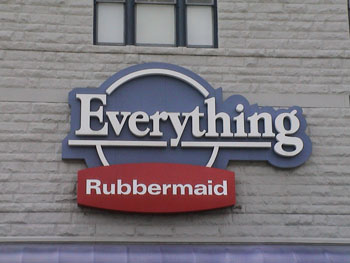
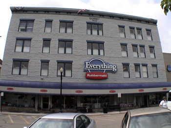
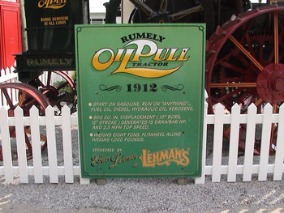

 As we were finishing our lunch, one of the workers came over to tell us she was impressed with how well behaved our children were. Having 5 boys we get noticed by a lot of people. I am glad that this time it was because they were being well behaved. Actually, we have been told that many times in many different situations. I am grateful that the children do their best to follow the rules and be obedient. They really are good boys. The worker offered our boys ice cream cones as a treat.
 While leaving town to find the highway again, we turned down one of the streets downtown and found an interesting store. It is called Everything Rubbermaid and is located in a well cared for building in downtown Wooster, Ohio. Inside we found exactly as the name implies, a store devoted to everything Rubbermaid produces. There were four floors of rubbermaid items, from dishes, to toys, to tools, furniture, etc. It was a fun store!
I just visted Rubbermaid's website looking for information about this store. I expected to find something about it as it seemed this store would be exactly the kind of thing a company would want to promote. However, I couldn't find anything. I even tried their store locator with Wooster's zip code. I got a list of stores like Lowe's and Wal-Mart, but nothing about this store. The best I could come up with, after sifting through the fine print on their About page, is that "...A Newell Rubbermaid company, Rubbermaid Home Products is headquartered in Wooster, Ohio..."
 Having escaped the Rubbermaid store by only spending about $8, we moved on to Kidron to find Lehman's. Located in the middle of Amish country is a store noted for its stock of all things non electric. From gas lights, to gas refrigerators, this store has everything you could imagine, and probably things you never guessed even existed. It was laid out like a maze, occupying probably 3 or 4 different building stuck together. We wandered around for about an hour and a half before I even noticed the time. We then spent another hour making sure we had covered everything. And I am pretty sure we must have missed some of the store. I, for one, did not get a good look at the tools.
We finished the day at a newly discovered pizza place, Sam's Club. Yes, that's right, Sam's Club sells pizza at their snack bar. You can buy a large pizza, very well topped, for just $8, and their 32 oz. fountain drinks are just 69 cents. When we go out to eat, we don't normally buy soft drinks. They add quite a bit to the bill when you are buying them for seven people. But at Sam's Club we splurged and let the boys have a treat.
{kind=link}
{kind=link}
{kind=link}